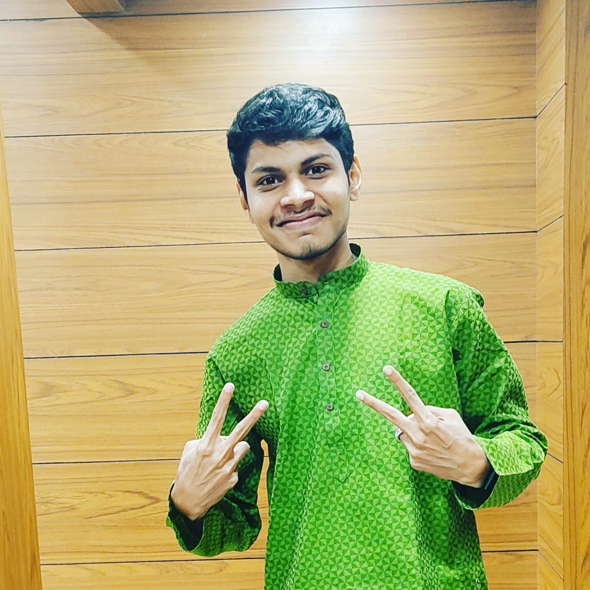

|  | I'm a patient, adaptable, and positively-minded individual with an insatiable passion for innovation. I'm constantly seeking ways to elevate my results-oriented approach to new heights. 🎓 Education: I completed my 10th grade from AMMHS Pulikkal and pursued +2 science from Government HSS Pantirankavu, Calicut. My educational journey continued with a B.Sc. in Electronics from the Institute of Human Development, Vazhakkad. During this time, I proudly served as a member of the National Service Scheme (NSS). 🏆 Leadership Experience: While in college, I had the privilege of serving as the college leader of the Innovation and Entrepreneurship Development Center (IEDC). In this role, I connected students with startup founders, facilitating the growth of innovative ideas and helping startups thrive. This experience significantly enhanced my leadership qualities and fueled my commitment to fostering innovation. 🛠️ Project Experience: One of my proudest accomplishments was working on a project involving Virtual Assistance-based "Hello Robo" in embedded systems, successfully completed from Nexus Technologies. More recently, I took the lead in a significant e-commerce project, harnessing technologies like MongoDB, Node.js, Express, JavaScript, EJS, HTML5, and CSS3, and successfully hosted it. 💼 Professional Experience: I've had the privilege of working as a field engineer at JioFiber, where I gained valuable experience and honed my technical skills. 🌐 Current Endeavors: I'm currently building a freelance website that connects clients with developers—a project close to my heart. Simultaneously, I've launched and worked on a variety of mini-projects, each serving as a stepping stone in my journey to flourish my skills.It was my extensive involvement in more than 10 mini-projects that played a transformative role in my skill development. 💡 Freelance Projects: In my free time, I take on freelance projects, including this new venture, to further refine and expand my skills. I'm always on the lookout for opportunities to collaborate, learn, and grow. If you share my enthusiasm for innovation and a passion for continuous improvement, let's connect and explore how we can make a meaningful impact together. |
Nov-2021-May-2022
July 2019 october 2021
Library Mangagement app
Hosted Link:example.com
Library Mangagement app
Hosted Link:example.com
Library Mangagement app
Hosted Link:example.com
I faced challenges developing the "Hello Robo" system at Nexus Technologies. By breaking down tasks, collaborating with the team, and leveraging problem-solving skills, we successfully delivered the project.
I stay updated through online platforms, publications, and attending webinars. Involvement in over 10 mini-projects ensures my skills are adaptable and current.
As the college leader, I connected students with startup founders, fostering innovative ideas. Navigating diverse perspectives, motivating the team, and ensuring effective communication strengthened my leadership skills.
I prioritize tasks by breaking them into manageable goals, setting deadlines, and using project management tools. My experience at JioFiber as a field engineer refined my time management skills.
At MapOut, a team member unexpectedly left. I assumed additional responsibilities, collaborated with the team, and ensured a smooth transition, showcasing adaptability and commitment to project success.